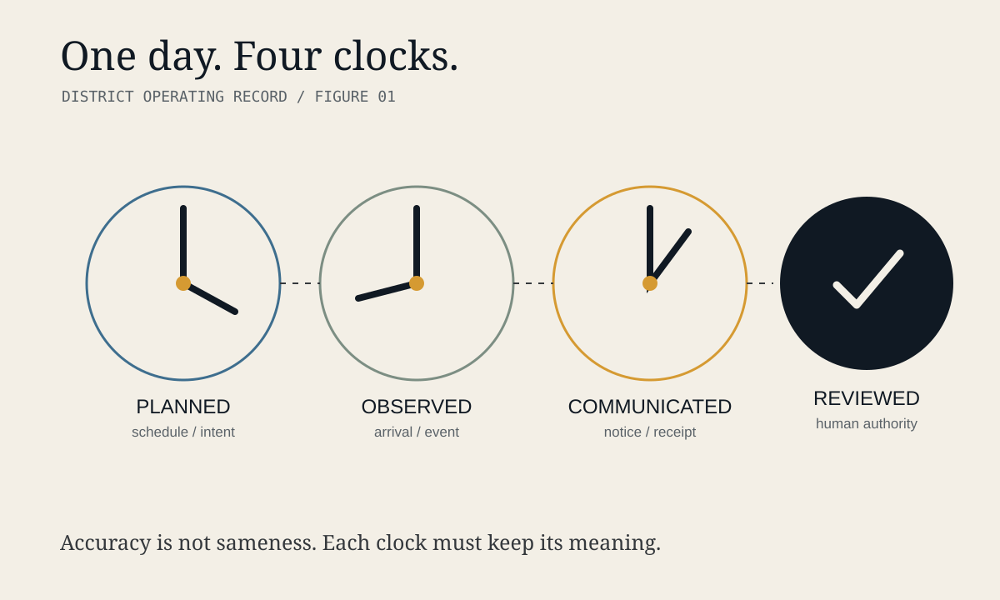
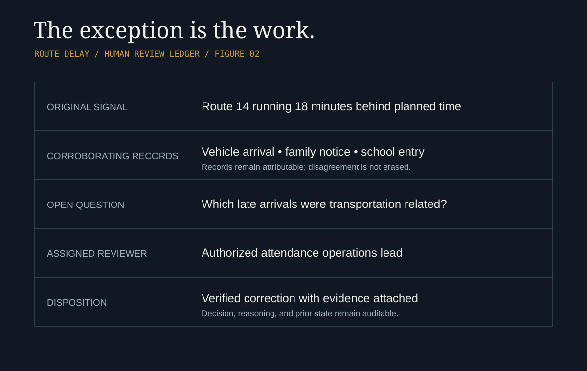
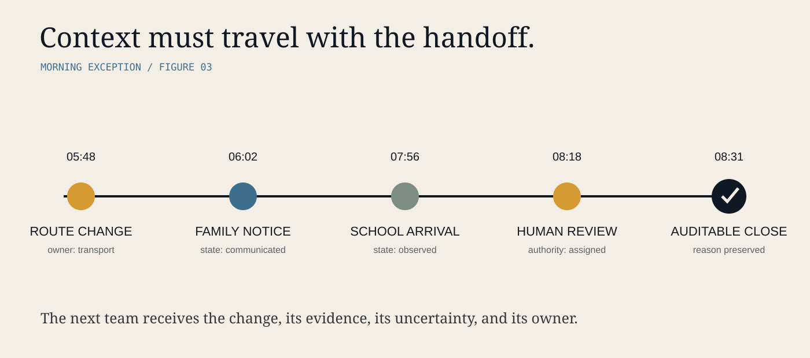

Before the first class starts, transportation teams have interpreted route changes, facilities staff have opened buildings, food-service teams have prepared for arrival, substitute assignments have shifted, families have acted on messages, and school leaders have made dozens of decisions with incomplete information. Each group works from a different clock. The district experiences the consequences as one day.
A late bus is not only a transportation event. It can become an attendance discrepancy, a breakfast-service exception, a front-office question, a family notification, and a safety concern. If each system records only its own version, staff are left to reconstruct what happened after the fact.
One day, many clocks
A transportation platform may record that a vehicle reached a stop. An attendance system may show that a student entered class after the opening bell. A family communication system may contain a message about a delayed route. A building log may record when a side entrance was opened. Each fact can be accurate while the district-wide picture remains unclear.
The clocks measure different things. A scheduled time describes intent. A recorded arrival describes observation. A message timestamp describes communication. A staff note describes interpretation. Treating those records as interchangeable can make a clean dashboard while obscuring the sequence people actually need to understand.

The exception is the work
Most school days run without a dramatic incident. That does not mean they are operationally simple. The work lives in exceptions: a route reassignment, an absent driver, a building opening late, a student appearing in one system but not another, an emergency contact change, or a meal count that no longer matches expected attendance.
Traditional reporting often compresses these events into a final status. NORTHLINE™ takes a different public-facing premise: the exception should remain connected to the records and human review that resolved it.
The goal is not to make uncertainty disappear. It is to make the next responsible action visible.

Timing is governance
Who knew what, and when? Which record was available when a decision was made? Was a family notified before or after a route changed? Did an attendance correction reflect a verified transportation delay? Those questions cannot be answered reliably if every system overwrites earlier states or if a consolidated view hides provenance.
The Function Media engineering discipline connects NORTHLINE™ to a broader systems architecture without making it interchangeable with other platforms. Multi-source ingestion and normalization create a shared operating surface. Identity and entity resolution help determine which permitted records refer to the same person, route, location, or event. Evidence graphs maintain relationships. Confidence-aware reasoning surfaces uncertainty. Role-based access limits who can see and act. Human review provides authority. Immutable auditability preserves history.
A handoff should carry context
Many operational failures do not happen inside a department. They happen at the handoff between departments. The handoff is not merely a notification. It carries state: what changed, what remains uncertain, who owns the next step, and when the issue should be reviewed again.

What must remain human
NORTHLINE™ is not presented as a substitute for educators, administrators, transportation professionals, counselors, emergency procedures, legal review, or district authority. An automated signal is not, by itself, a conclusion about a student, family, employee, or school.
- 01Access follows role and authorization—not convenience.
- 02Record conflicts remain visible until a person resolves them.
- 03Confidence and operational risk are kept distinct.
- 04A decision retains its evidence, owner, and history.
Before the first bell
The future of K–12 operations is not a bigger control panel. It is an accountable operating record: one that connects the day without pretending every clock tells the same story.